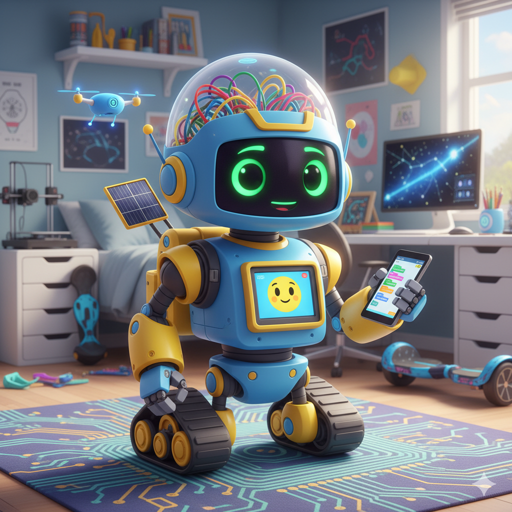

¡Bienvenidos a Computación y Robótica!
En esta etapa, el desafío es mayor. Preparaos para llevar sus habilidades de los lenguajes visuales al mundo del código, donde la lógica y la creatividad se unen para construir soluciones más poderosas.
Usa el menú lateral para navegar por las diferentes unidades y descubrir todo lo que la computación y la robótica tienen para ofrecerte.

- ¡El futuro está en tus manos!